IntelliJ IDEA 是最主流的 Java IDE，但也因为功能强大而显得极其复杂。这让初学者望而却步。有必要对 IDE 进行适当地配置，以便初学者能够快速上手。
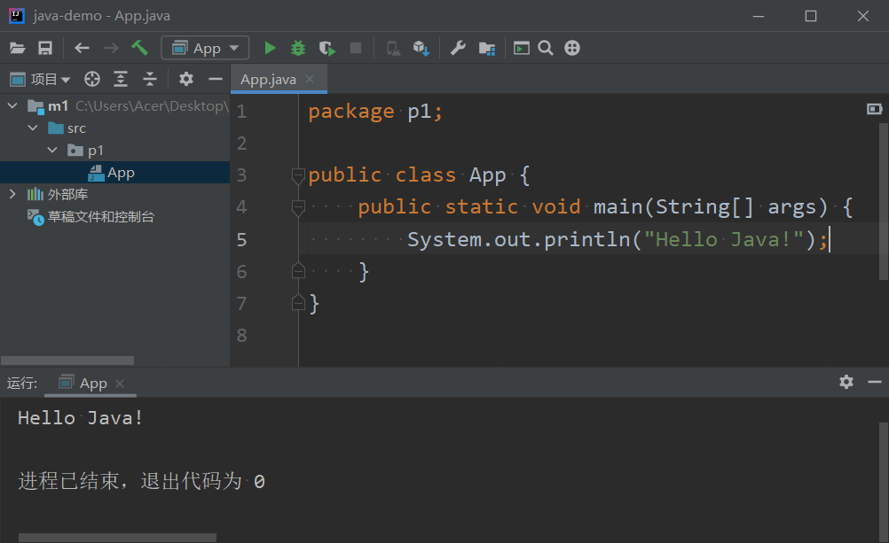
IntelliJ IDEA 是 JetBrains 公司的拳头产品，分为商业版和免费、开源的社区版，可以直接 从 JetBrains 官网下载。
无论选择使用什么 IDE，都要先安装 Java 的开发包 JDK。它包含了运行 Java 程序必备的 Java 虚拟机 JVM 和开发 Java 程序必备的编译器、调试器等。从 Oracle 官网下载最新版本的 JDK。
安装并测试 JDK
JDK 的安装过程极其简单，无须赘述。安装完成之后，单击关闭即可。
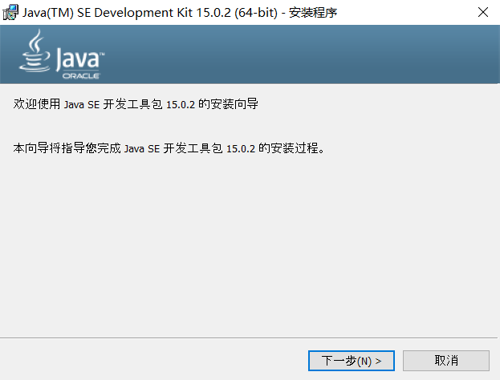
检查 JDK 是否可以正常使用（当然也可以跳过）。按住 Shift > 在桌面的空白处右击 > 在此处打开 PowerShell… > 输入 java --version > 按回车。这将看到 JDK 的版本信息。
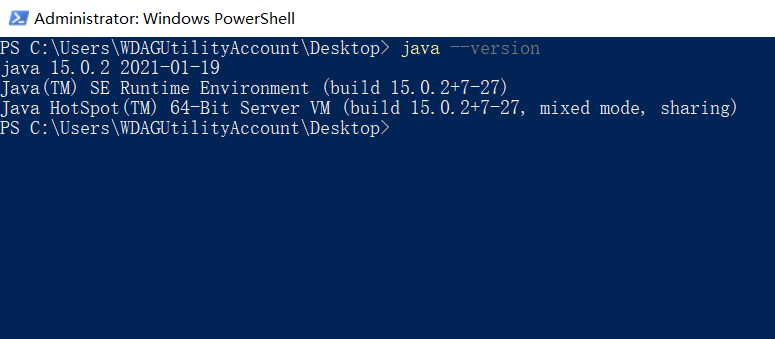
在桌面新建一个文本文档，打开，输入以下内容，保存，重命名为 demo.java。
1 | public class App { |
在刚才的 PowerShell 窗口输入 java demo.java，按回车。
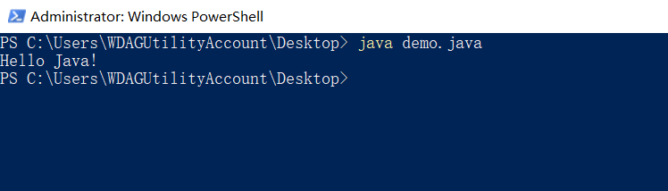
看到 Hello Java! 即可。
安装 IDEA
双击 IDEA 的安装包。
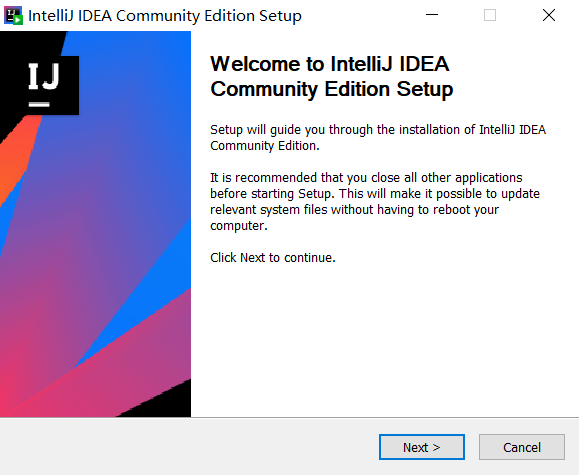
如果想要 IDEA 在桌面创建一个图标，勾选 64-bit launcher。如果希望可以通过右击弹出的菜单打开 IDEA 并创建一个新的项目，勾选 Add “open Folder as Project”。
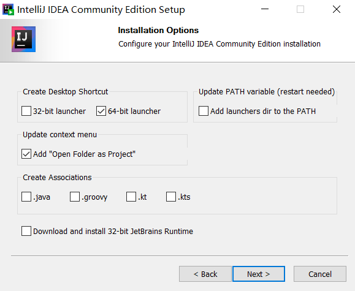
安装完成后单击 Finish 即可。
打开 IDEA，勾选 I confirm … 后单击 Contine，之后单击 Don’t send 即可。
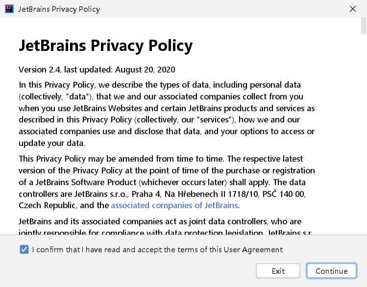
汉化
Plugins > chinese lang > Install > Restart IDE
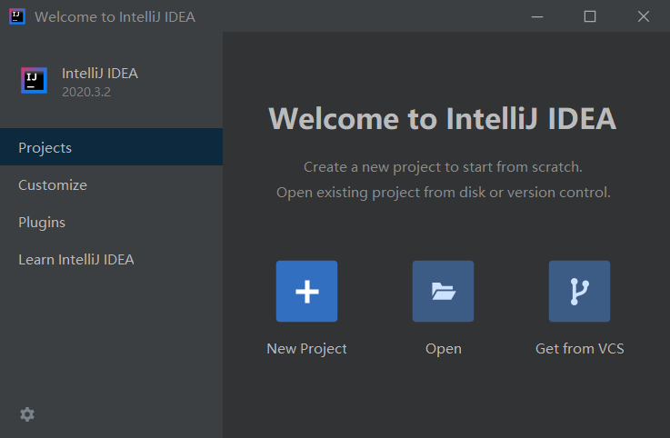
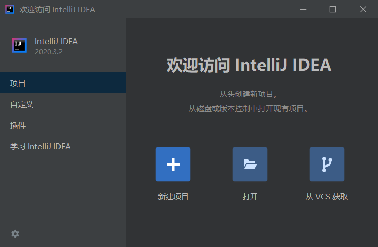
新建项目
在桌面创建一个文件夹，命名为 demo。当然，也可以是其他名称、在其他位置，只要你记住它在哪儿就可以。
新建项目 > 空项目 > 下一步。
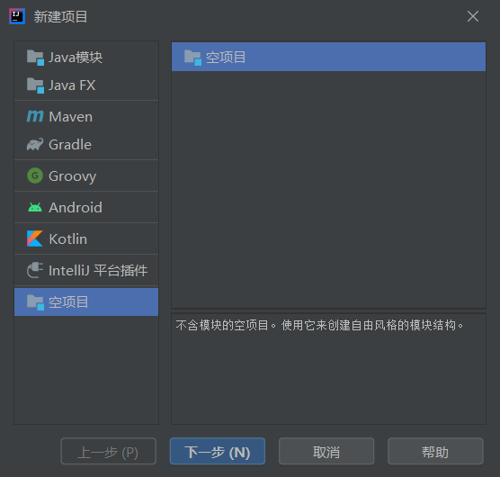
填写项目名称（建议和文件夹保持一致），然后选择刚刚创建的空文件夹，完成。
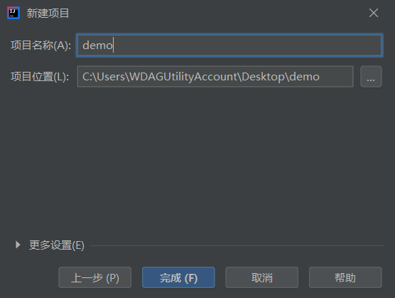
添加模块
+ > 添加模块 > Java 模块 > 下一步 > 输入模块名 m1 > 完成。
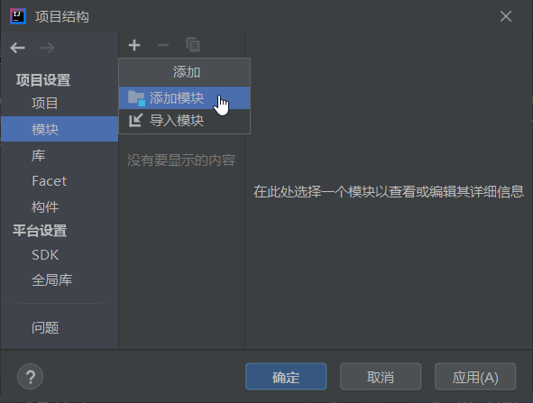
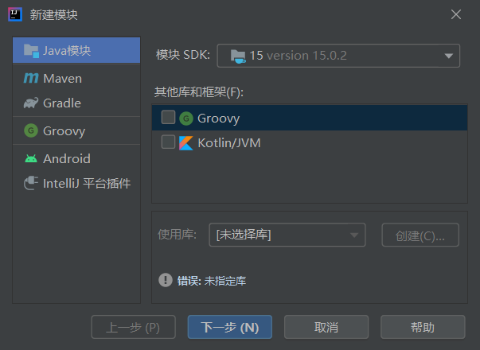
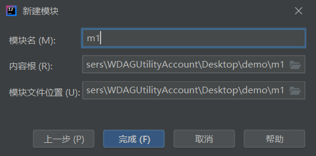
回到项目结构，确定。
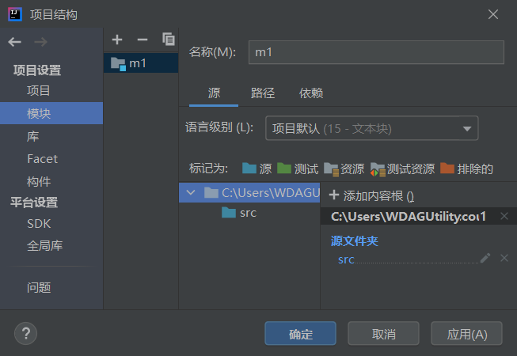
如果出现下面提示，勾选不显示提示，关闭。
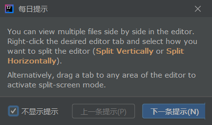
修改外观
主菜单 > 视图 > 外观 > 除了主菜单、工具栏，其他都不用勾选。
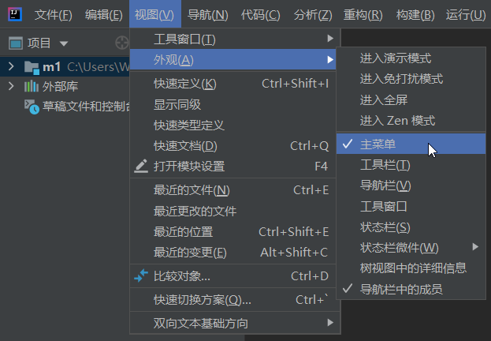
新建包
右侧 > 展开 m1 > 右击 src > 新建 > 软件包 > 输入包名 p1 > 按回车。
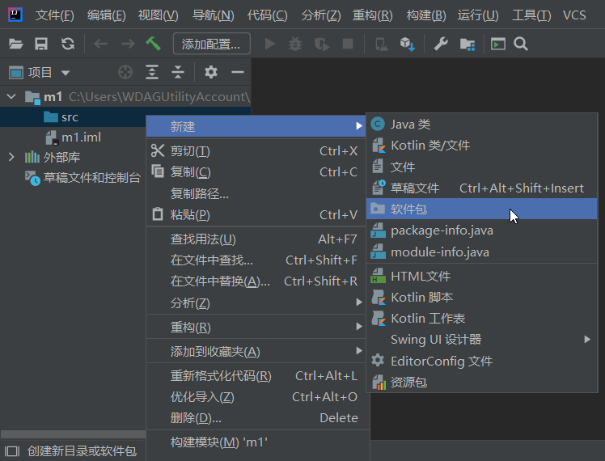
新建类
右击 p1 > 新建 > Java 类 > 输入类名 App > 按回车。
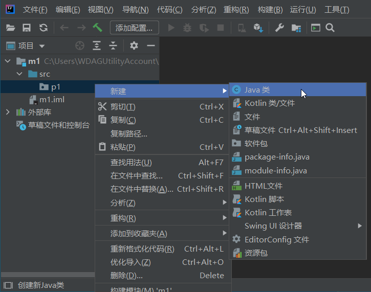
补全代码：
1 | package p1; |
文件发生变化后，IEDA 都会自动保存。
添加配置
添加配置 > + > 应用程序。
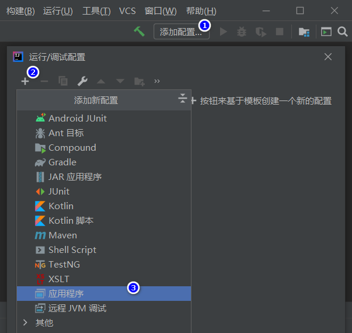
填写名称 AppConfig > 填写主类 p1.App > 确定。
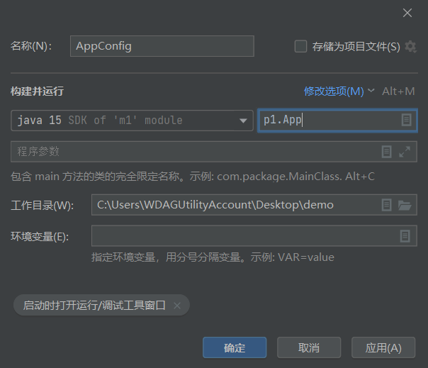
编译并运行
单击工具栏中间的三角形按钮即可立即进行一次编译并运行。
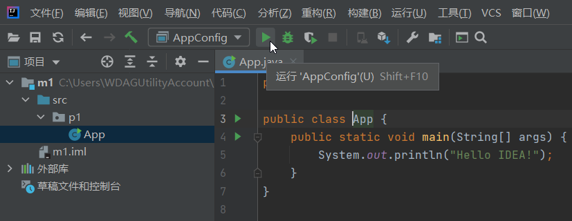
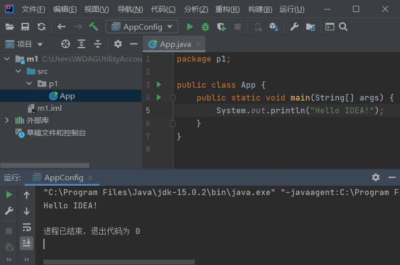
关闭/移除项目
如要关闭项目：主菜单 > 文件 > 关闭项目。
删除项目之前，要从 IDEA 移除项目：先关闭项目 > 右击 > 从最近的…
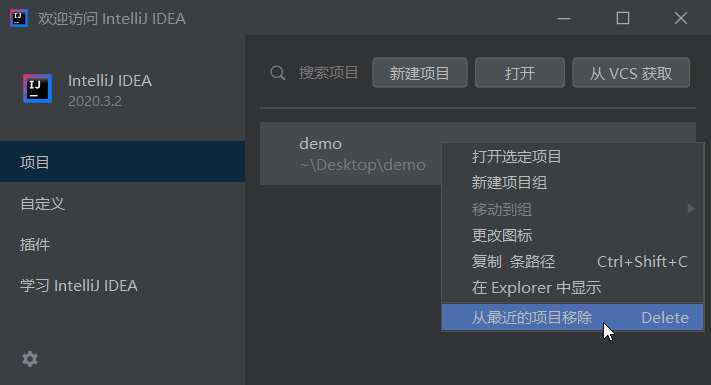
现在就可以去删除对应的文件夹了。
Licence: CC BY-NC-ND 4.0